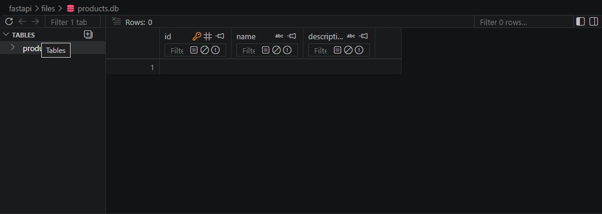
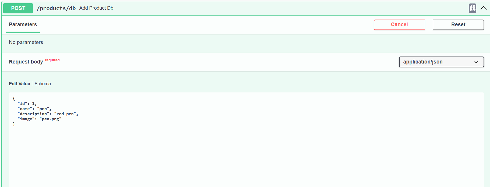
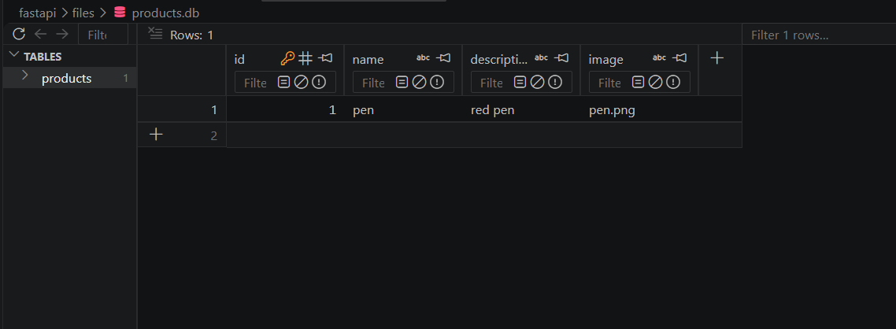
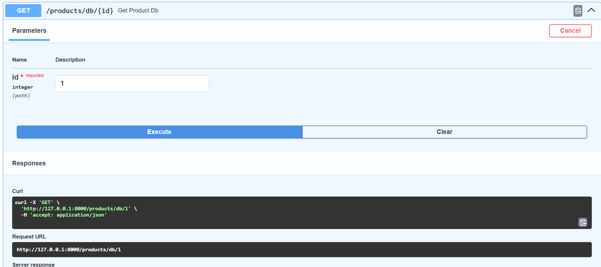
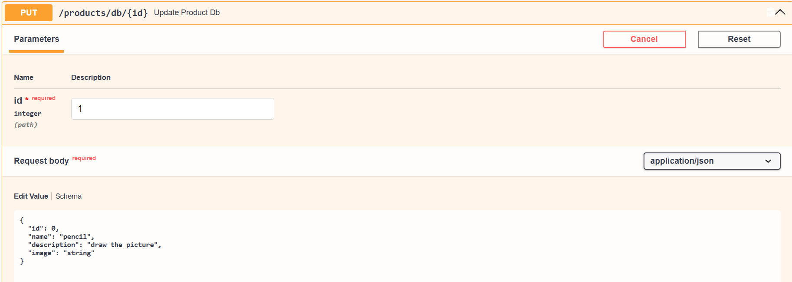
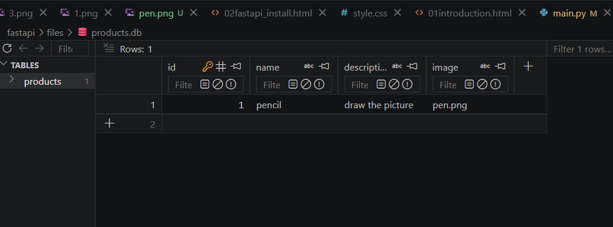
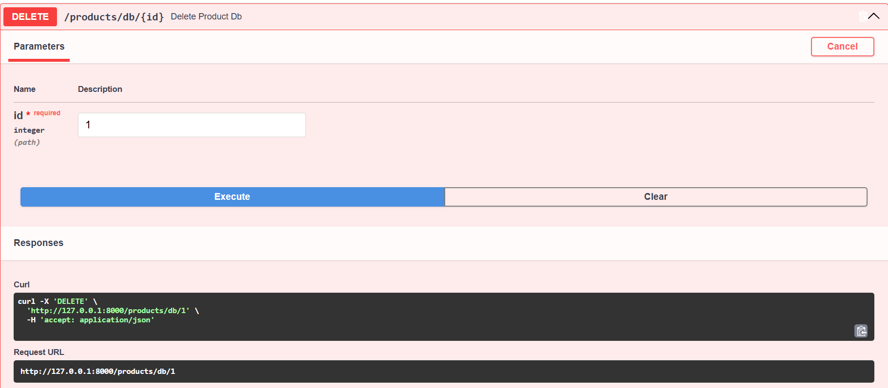
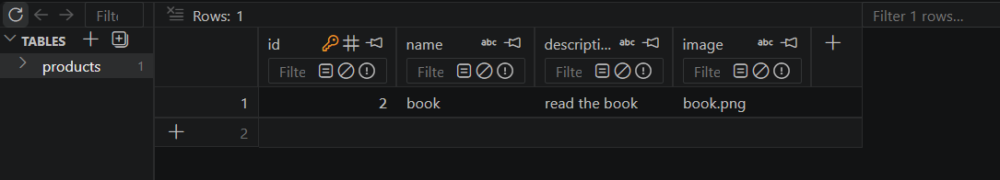

SQLite
1.Install Required Packages
Terminal
pip install sqlalchemy
2.Create database
Project layout:
myproject/
├── main.py
├── database.py
├── schemas.py
├── models.py
└── products.db
mysite/database.py
from sqlalchemy import create_engine
from sqlalchemy.orm import declarative_base, sessionmaker
DATABASE_URL = "sqlite:///./products.db"
engine = create_engine(
DATABASE_URL,
connect_args={"check_same_thread": False}
)
SessionLocal = sessionmaker(
autocommit=False,
autoflush=False,
bind=engine
)
Base = declarative_base()
3.Create schemas.py
mysite/schemas.py
from pydantic import BaseModel
class ProductCreate(BaseModel):
name: str
description: str
image: str
class Config:
from_attributes = True
4.Create models.py
mysite/models.py
from sqlalchemy import Column, Integer, String
from database import Base
class Products(Base):
__tablename__ = "products"
id = Column(Integer, primary_key=True, index=True)
name = Column(String)
description = Column(String)
image = Column(String)
mysite/main.py
from sqlalchemy.orm import Session
from schemas import ProductCreate
from models import Products
from database import engine, SessionLocal,Base
app=FastAPI()
Base.metadata.create_all(bind=engine)
def get_db():
db = SessionLocal()
try:
yield db
finally:
db.close()
.......
.......
Run:
Terminal
uvicorn main:app --reload

5.Add POST Database
mysite/main.py
from fastapi import Depends
.......
@app.post("/products/db")
def add_product_db(product: ProductCreate, db: Session = Depends(get_db)):
new_product = Products(
name=product.name,
description=product.description,
image=product.image
)
db.add(new_product)
db.commit()
db.refresh(new_product)
return {
"message": "Product Added Successfully",
"data": new_product
}


6.GET Database
mysite/main.py
@app.get("/products/all")
def get_all_datas(db: Session = Depends(get_db)):
products = db.query(Products).all()
return {
"data" : products
}
mysite/main.py
@app.get("/products/db/{id}")
def get_product_db(id: int, db: Session = Depends(get_db)):
product = db.query(Products).filter(Products.id == id).first()
if product is None:
return {"message": "Product not found"}
return product

7.update PUT Database
mysite/main.py
@app.put("/products/db/{id}")
def update_product_db(id: int, product: ProductCreate, db: Session = Depends(get_db)):
db_product = db.query(Products).filter(Products.id == id).first()
if db_product is None:
return {"message": "Product not found"}
db_product.name = product.name
db_product.description = product.description
db.commit()
db.refresh(db_product)
return {
"message": "Product Updated Successfully",
"data": db_product
}


8.Delete Database
mysite/main.py
@app.delete("/products/db/{id}")
def delete_product_db(id: int, db: Session = Depends(get_db)):
db_product = db.query(Products).filter(Products.id == id).first()
if db_product is None:
return {"message": "Product not found"}
db.delete(db_product)
db.commit()
return {"message": "Product Deleted Successfully"}


9. Image/File Upload and Static File Serving
Step 1: Create Upload Folder
mysite/main.py
import os
import shutil
UPLOAD_DIR = "uploads"
if not os.path.exists(UPLOAD_DIR):
os.makedirs(UPLOAD_DIR)
Step 2: Configure Static File Serving
mysite/main.py
from fastapi.staticfiles import StaticFiles
app.mount(
"/files",
StaticFiles(directory=UPLOAD_DIR),
name="files"
)
Step 3: Create Image Upload API
mysite/main.py
from fastapi import UploadFile, File, HTTPException
@app.post("/upload")
def upload_file(file: UploadFile = File(...)):
filename = file.filename
if not filename:
raise HTTPException(
status_code=400,
detail="File not selected"
)
file_path = os.path.join(
UPLOAD_DIR,
filename
)
with open(file_path, "wb") as buffer:
shutil.copyfileobj(
file.file,
buffer
)
return {
"message": "File Uploaded Successfully",
"fileName": filename,
"file_url": f"http://127.0.0.1:8000/files/{filename}"
}
Step 4: Upload Image Using Swagger UI
Terminal
uvicorn main:app --reload
Step 5: Image URL
Response
{
"message": "File Uploaded Successfully",
"fileName": "product.jpg",
"file_url": "http://127.0.0.1:8000/files/product.jpg"
}
Step 6: Store Image URL in Product Database
mysite/schemas.py
from pydantic import BaseModel
class ProductCreate(BaseModel):
name: str
description: str
image: str
class Config:
from_attributes = True
mysite/models.py
from sqlalchemy import Column, Integer, String
from database import Base
class Products(Base):
__tablename__ = "products"
id = Column(Integer, primary_key=True, index=True)
name = Column(String)
description = Column(String)
image = Column(String)
Step 7: Add Product With Image URL
mysite/main.py
@app.post("/products/db")
def add_product_db(
product: ProductCreate,
db: Session = Depends(get_db)
):
new_product = Products(
name=product.name,
description=product.description,
image=product.image
)
db.add(new_product)
db.commit()
db.refresh(new_product)
return {
"message": "Product Added Successfully",
"data": new_product
}
Step 8: Display Image in HTML
HTML

Step 9: Complete File Upload Flow
Flow
User
↓
POST /upload
↓
FastAPI UploadFile
↓
uploads/product.jpg
↓
StaticFiles
↓
/files/product.jpg
↓
Image URL
↓
Product.image
↓
SQLite Database
Important Note
mysite/main.py
app.mount(
"/files",
StaticFiles(directory=UPLOAD_DIR),
name="files"
)